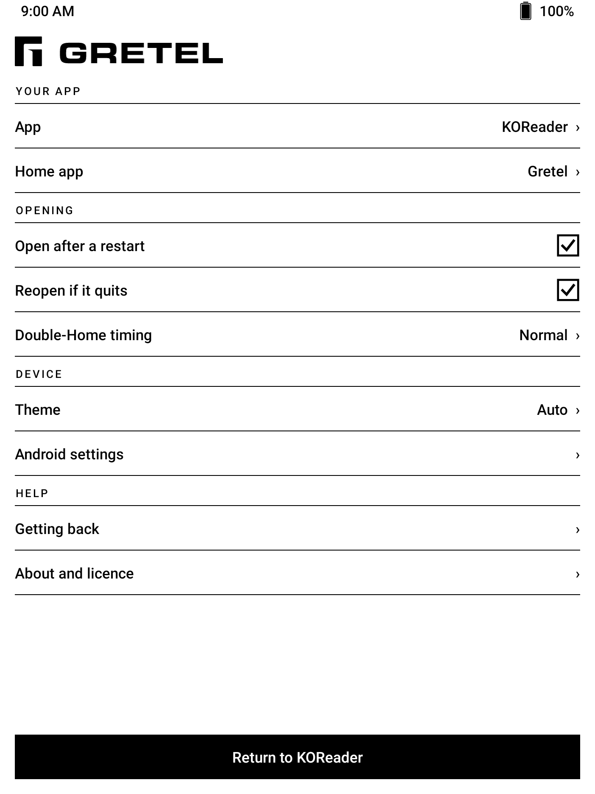

The anti-launcher.
Your home screen is one app.
Every Android launcher hands you a grid of apps and asks you to choose again, every time you press Home. Gretel asks once.

Download the APK Source on GitHub



What it does
- One chosen app replaces the home screen. Your Home button or gesture opens it, every time.
- Your app stays in front. Gretel can bring it back after a restart or when the app exits. Both behaviors are optional, and if the app keeps crashing Gretel stops reopening it and shows settings instead.
- Settings are always within reach. Home twice quickly opens Gretel instead of your chosen app.
- Designed for e-ink. High contrast, large targets, no ripples, no animation. Every screen is paged, never scrolled.
- Private by construction. No account, ads, analytics, network permission, or broad package visibility.
- Easy to undo. Choose another home app in Android settings, or uninstall Gretel like any other app.
Use cases
Gretel was built for e-readers, where a reading app such as KOReader should simply be the device. The same trick turns any spare phone or tablet into a single-purpose tool. Pick the app, install Gretel, done.
| Category | Use case | The device becomes | Start with (F-Droid) |
|---|---|---|---|
| Reading | E-reader | A book. Home returns to the reader, every time. | KOReader, Librera |
| Reading | Read-later device | Your saved articles and feeds, without a feed. | wallabag, Feeder |
| Reading | Scripture | A device that opens to the text, nothing else. | AndBible |
| Writing | Writing deck | A tablet and a Bluetooth keyboard become a typewriter. | Markor |
| Writing | Paper notebook | An e-ink tablet that opens straight to a blank page. | Saber |
| Focus | Study cards | An old tablet becomes a deck of flashcards. | AnkiDroid |
| Focus | Sleep phone | The bedroom phone is an alarm clock or white noise, and cannot be anything else. | Fossify Clock, Noice |
| Focus | Habit tracker | One screen, one question: did you do it today? | Loop Habit Tracker |
| Focus | Dumbphone | A spare phone that only makes calls or only sends texts. | Fossify Phone, Fossify Messages |
| Family | Grandparent's phone | Opens to video calls. If they get lost, Home brings the calls back. | Jitsi Meet, Linphone |
| Family | Kid's audiobook player | An old phone with stories and no store. | Voice |
| House | Wall dashboard | A Home Assistant tablet without kiosk software. | Home Assistant |
| House | Kitchen tablet | Recipes at the counter. | Nextcloud Cookbook |
| House | Family calendar | A shared calendar on the wall. | Fossify Calendar |
| House | Photo frame | A slideshow on a tablet you no longer use. | Fossify Gallery |
| Outdoors | Car or bike GPS | Offline maps on a mounted phone. | OsmAnd, Organic Maps |
| Outdoors | Field and survival kit | Compass, weather, astronomy, and navigation, all offline. | Trail Sense |
| Outdoors | Night sky | A phone that opens to the stars. | Sky Map |
| Outdoors | Run and ride tracker | A dedicated GPS logger. | OpenTracks |
| Hobbies | Music player | An old phone becomes an iPod again. | Auxio |
| Hobbies | Podcast player | Podcasts and nothing else. | AntennaPod |
| Hobbies | Practice room | A metronome on the music stand. | Metronome |
| Hobbies | Chess board | Chess on e-ink. | DroidFish |
| Hobbies | Crossword book | A puzzle book that never runs out. | Forkyz |
| Hobbies | Game console | An old phone with a controller clip. | RetroArch |
| Hobbies | Camera | A point-and-shoot for a kid, or for you. | Open Camera |
| Hobbies | Travel translator | A spare phone for the trip. | Translate You |
| Work | Barcode scanner | A scanner for the stockroom. | Binary Eye |
| Work | Paper terminal | An e-ink tablet, a keyboard, and a shell. | Termux |
Gretel does not keep the screen on and does not lock anything. For a dashboard or photo frame, use the app's own keep-awake setting or Android's "Stay awake while charging" developer option. Built something that is not listed? Open an issue and it can join the table.
For digital minimalists
A minimal launcher still shows you a list. A list is still a menu, and a menu is still a decision. Gretel removes the menu. Your device opens to the one thing you brought it for, and Home takes you back there, not to a place where other things can ask for you.
It is not a lock. Locks invite you to test them. Gretel is a default, and defaults are what change behaviour. Everything stays one settings screen away, so you never feel trapped, and never need to.
Gretel is not a kiosk or parental-control app. It is intentionally reversible and does not use Device Admin, Accessibility, overlays, or lock task mode. If you need to stop someone from leaving an app, Gretel is the wrong tool.
Compatibility
| Android | 8.0 Oreo or newer |
|---|---|
| Architectures | Any. Gretel contains no native code. |
| Tested on | BOOX Nova Air, Android 10 |
| Package | com.abeant.gretel |
| Licence | Apache 2.0 |
Install
- Download
gretel.apkfrom Releases and open it on your device. If Android asks, allow your browser or file manager to install unknown apps. - Open Gretel and choose the app you want to use.
- Follow the prompt to set Gretel as your home app.
Home once returns you to your chosen app. Home twice quickly opens Gretel's settings.